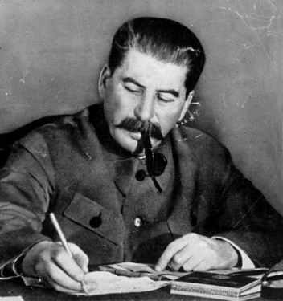

|
|
63 JOSEPH STALIN 1879-1953
Nama aslinya panjang
dan tidak gampang diingat: Iosif Vissarionovich Dzugashvili.
Dunia mengenalnya dengan Joseph Stalin, yang bertahun-tahun
jadi diktator proletariat Uni Soviet. Dilahirkan tahun 1879
di kota Gori, Georgia di Kaukasus dan bahasa asalnya pun
Georgia, yang jauh berbeda dengan bahasa Rusia. Baru
belakangan bahasa Rusia dipelajarinya, tetapi tiap ngomong,
aksen Georgianya tak pernah lenyap. Dia dibesarkan dalam
suasana miskin papa. Ayahnya tukang sol sepatu yang gemar
mabuk dan menggebuki anaknya sampai melintir. Ayah pemabuk
ini meninggal tatkala Iosif berumur sebelas tahun. Selagi
muda Iosif belajar di sekolah gereja di kota Gori dan
sesudah menginjak umur belasan dia masuk seminari teologi di
Tiflis. Tetapi, tahun 1899 dia ditendang keluar seminari
karena dituduh "menyebar pikiran-pikiran subversif." Maka
bergabunglah ia dengan gerakan Marxis bawah tanah, dan di
tahun 1903, tatkala ada perpecahan dalam tubuh partai, dia
memihak kelompok Bolshevik. Hingga tahun 1917 dia merupakan
anggota partai yang gigih dan giat, ditahan tak kurang enam
kali. (Tetapi, umumnya hukuman yang menimpanya tidak berat.
Lebih dari satu kali dia mencoba melarikan diri dari
tahanan. Ada dugaan, ada masa singkat dimana sebetulnya dia
merupakan agen ganda). Di masa inilah dia mulai pakai nama
samaran yang sedap dan cocok: Stalin, orang yang terbuat
dari baja.
Stalin tidak pegang peranan menentukan dalam revolusi
tahun 1917. Tetapi, dia amat aktif dalam masa dua tahun
berikutnya, dan di tahun 1922 dia menjadi Sekretaris Jendral
Partai Komunis. Kedudukan ini membuka kesempatan luas
baginya menggunakan pengaruh terhadap jalannya administrasi
partai dan sekaligus merupakan faktor utama dalam pergulatan
menuju puncak kekuasaan sesudah Lenin meninggal dunia.
Jelas sekali, Lenin cenderung agar penggantinya Leon
Trotsky. Nyatanya, dalam testamen politiknya Lenin
menandaskan bahwa Stalin terlampau keras dan mesti
disingkirkan dari kedudukan Sekretaris Jendral partai.
Tetapi, sesudah Lenin tiada di awal tahun 1924, Stalin
menggantikannya seraya menyembunyikan testamen Lenin. Lebih
jauh dari itu, Stalin berhasil menggalang kekuatan bersama
Lev Kamenev dan Grigori Zinoviev, dua anggota penting
politbiro, dan membentuk troika atau triumvirate.
Bersama-sama mereka berhasil mengalahkan Trotsky dan para
pengikutnya. Kemudian Stalin --seorang genius dalam hal
perkelahian geser-menggeser dalam kelompok-- berbalik
menghadapi Zinoviev dan Kamenev serta menyingkirkan kedua
mereka. Sesudah berhasil mengalahkan "oposisi sayap kiri"
(misalnya: Trotsky, Kamenev, Zinoviev dan pengikutnya) dalam
perebutan kekuasaan, Stalin meneruskan menerima beberapa
usul-usul politik mereka. Tak lama sesudah itu, Stalin
menghadapi "sayap kanan" dari partai Komunis --sekutu
sementaranya-- dan mengalahkan mereka pula. Menjelang awal
tahun 1930-an, dia sudah menjadi diktator tunggal di Uni
Soviet.
Dari kedudukan yang penuh kuasa ini, mulai tahun 1934,
Stalin melancarkan serentetan pembersihan. Peristiwa yang
sedikitnya bisa dianggap awal dari tindak pembersihan itu
adalah pembunuhan yang terjadi tanggal 1 Desember 1934 atas
diri Sergei Kirov, pejabat tinggi Komunis dan salah seorang
penasihat Stalin. Besar kemungkinan, Stalin sendiri yang
memerintahkan pembunuhan itu, sebagian untuk menyingkirkan
Kirov, tetapi tampaknya lebih ditujukan untuk menyembunyikan
langkah-langkah pembersihan lebih lanjut.
Tahun-tahun berikutnya, sejumlah besar orang-orang yang
pernah jadi tokoh pimpinan partai Komunis di masa revolusi
1917, dan mereka yang berada di bawah pemerintahan Lenin,
dituduh pengkhianat oleh Stalin dan dihukum. Banyak diantara
mereka yang melakukan pengakuan terbuka di depan pengadilan
rakyat. Ini sama saja dengan misalnya Thomas Jefferson,
ketika jadi Presiden, menangkap sebagian besar para
penandatangan Deklarasi Kemerdekaan dan menghukum mereka
sesudah mereka "mengaku" di depan pengadilan umum. Di tahun
1938, orang yang mengepalai permulaan langkah pembebasan,
Genrikh Yagoda, juga di bawa ke depan pengadilan, mengaku
telah berkhianat dan segera dihukum mati. Juga penggantinya
Nicolai Yehzov mengalami nasib serupa.
Pembersihan di pertengahan tahun 1930-an meluas ke
segenap tubuh partai Komunis dan Angkatan Bersenjata, dan
pembersihan itu tidaklah semata ditujukan kepada masalah
anti-Komunis dan kontra revolusioner. Stalin lebih sukses
dalam hal membunuh kaum Komunis ketimbang yang dilakukan
oleh polisi Czar sendiri. Contohnya, dari anggota Central
Komite Partai Komunis yang terpilih tahun 1934, lebih dari
dua pertiganya dibunuh pada saat pembersihan berikutnya.
Dari langkah-langkah ini jelas sudah, motif utama Stalin
adalah membuka kemungkinan buatnya mendirikan satu kekuatan
yang berdiri sendiri di dalam negeri. Ironisnya, justru pada
saat hebat-hebatnya pembersihan inilah Stalin mengeluarkan
konstitusi baru Uni Soviet yang disebut demokratis.
Diantara politik ekonomi yang ditegaskan Stalin adalah
kolektivisasi paksa sektor pertanian; politik ini amat tidak
populer di kalangan petani dan banyak diantara mereka
menentangnya. Di awal tahun 1930-an, dengan perintah Stalin,
berjuta-juta petani dibunuh atau dibiarkan mati kelaparan.
Dan pada akhirnya politik ini berhasil. Secara ekonomi,
sektor pertanian Uni Soviet boleh dibilang terbelakang sejak
saat itu.
Politik Stalin lainnya adalah mendorong cepatnya
industrialisasi. Ini terselesaikan sebagian lewat serentetan
"Rencana Pembangunan Lima Tahun"-nya yang kemudian banyak
ditiru oleh negeri-negeri di luar Uni Soviet. Di samping
pelbagai ketidak-efesienan, politik industrialisasi Stalin
bisa dibilang membawa perbaikan dan sukses. Kendati besarnya
kehilangan material yang diderita oleh Uni Soviet dalam
Perang Dunia ke-2,Uni Soviet keluar dari perang itu sebagai
negara industri terbesar kedua di dunia.
Bulan Agustus 1939 Hitler dan Stalin menandatangani
perjanjian "tidak saling menyerang" yang masyhur. Dalam
tempo dua minggu, Hitler menyerbu Polandia dari arah barat,
dan beberapa minggu kemudian Uni Soviet menyerbu dari
lambung timur, dan menduduki sebagian daripadanya. Di ujung
tahun itu pula Uni Soviet mengancam tiga negeri yang
merdeka: Latvia, Lithuania, dan Estonia dengan kekuatan
senjata. Ketiganya menyerah tanpa perlawanan dan dimasukkan
ke dalam wilayah kekuasaan Uni Soviet. Hal serupa, sebagian
daerah Rumania juga dimasukkan ke dalam wilayah
kekuasaannya. Finlandia menentang ancaman, tetapi pada
akhirnya Uni Soviet menyerbu dan mendudukinya. Alasan Uni
Soviet melakukan penyerbuan itu adalah karena daerah-daerah
itu diperlukan untuk mempertahankan diri dari adanya
kemungkinan penyerangan dari Nazi Jerman. Tetapi, sesudah
perang usai dan Nazi sepenuhnya dikalahkan, Stalin tidak
melepaskan genggamannya atas daerah-daerah itu. (Hal serupa
dilakukan pula oleh para penggantinya).
Di akhir Perang Dunia ke-2, Angkatan Bersenjata Uni
Soviet menduduki bagian besar Eropa Timur dan Stalin
menggunakan kesempatan ini menjadikan daerah-daerah itu
negara Komunis yang berada di bawah pengaruh Uni Soviet.
Pemerintahan Marxis juga muncul di Yugoslavia, tetapi karena
di sana tidak ada pasukan Rusia, Yugoslavia tidaklah jadi
satelit Rusia. Mencegah jangan sampai negeri-negeri Komunis
lain mengikuti jejak Yugoslavia, Stalin mengambil
langkah-langkah pengamanan yang diperlukan. Tak lama sesudah
berakhirnya Perang Dunia ke-2, mulailah babak "perang
dingin" antara Uni Soviet dan Amerika Serikat. Kendati
Truman dan pemimpin negeri-negeri Barat lainnya punya saham
pula dalam memulai perang dingin, tak bisa diragukan bahwa
peranan Stalin lebih besar dari mereka.
Bulan Januari 1953 pemerintah Uni Soviet mengumumkan
bahwa sekelompok dokter telah ditangkap atas tuduhan
melakukan pembunuhan terhadap pejabat-pejabat tingkat tinggi
Rusia. Ini tampaknya merupakan rencana Stalin pula untuk
melakukan pembabatan berikutnya. Tetapi, tanggal 5 Maret
1953, diktator berumur 73 tahun itu meninggal dunia di
istana Kremlin, Moskow. Jasad Stalin dibaringkan di samping
Lenin di Mausoleum di Lapangan Merah. Tetapi, di tahun-tahun
berikutnya (khusus sesudah pidato Khruschev bulan Februari
1956), reputasi Stalin diseret ke bawah secara sengit di Uni
Soviet. Destalinisasi dilaksanakan secara besar-besaran.
Kehidupan kekeluargaan Stalin tidaklah terlampau bahagia
dan sukses. Dia kawin tahun 1904, tetapi tiga tahun sesudah
itu istrinya meninggal akibat mengidap penyakit paru-paru.
Anak satu-satunya --Jacob-- ditangkap Jerman waktu Perang
Dunia ke-2. Jerman mengajukan tawaran pertukaran tetapi
tawaran itu ditolak Stalin, dan matilah Jacob dalam kamp
konsentrasi. Stalin kawin untuk kedua kalinya tahun 1919.
Istri keduanya ini pun meninggal dunia tahun 1932. Ada
berita dia bunuh diri, tetapi desas-desus lain bilang
Stalinlah yang bunuh atau setidaknya membiarkan dia
terbunuh. Ada dua anak dari perkawinan kedua ini. Anak
laki-lakinya, seorang perwira Angkatan Udara Rusia, menjadi
pemabuk, dan mati tahun 1962. Anak perempuannya, Svetlana,
diusir dari Uni Soviet dan di tahun 1967 datang di Amerika
Serikat.
Watak utama Stalin adalah kekejamannya. Tak sedikit pun
tampak rasa belas kasihannya, bagai cadas yang sukar luluh.
Selalu dalam keadaan curiga, mendekati paranoia. Di seberang
lain, dia seorang yang berkemampuan: ulet, kemauan kuat,
teguh pendirian, angkuh, dan punya daya pikir yang kuatnya
luar biasa.
Selaku diktator selama kira-kira seperempat abad,
pengaruh Stalin sudah merasuk hampir ke semua segi
kehidupan. Ditilik dari imbangan antara daya kontrol
pribadinya dengan jumlah penduduk yang berada di bawahnya
serta masa kekuasaannya, bisalah dianggap Stalin itu seorang
diktator paling jempol dalam sejarah (meski bisa
diperdebatkan Mao Tse Tung juga punya bobot sama kuat). Di
masa hidupnya, Stalin mengirim berjuta orang ke alam baka,
atau ke kamp-kamp kerja paksa. (Tak ada cara mengetahui
persis berapa jumlah orang yang jadi korban akibat gerakan
sapu mautnya, tetapi mungkin bergerak di sekifar dua puluh
juta orang).
Tak bisa disangsikan lagi, jangka pendek pengaruhnya
teramatlah kuatnya, tetapi belum bisa dipastikan bagaimana
untuk jangka panjangnya. Misalnya, sejak kematian Stalin,
kekangan besi polisi rahasia terhadap penduduk Rusia sangat
jauh mengurang. Meskipun Uni Soviet masih berada di belakang
Amerika Serikat dalam hal kebebasan sipil dan politik dan
lain-lain negeri demokrasi Barat, kini tak ada lagi keadaan
totaliter seperti masa di bawah Lenin sebelum digantikan
oleh Stalin.
Negeri-negeri satelit Uni Soviet di Eropa Timur tampaknya
mantap, tetapi tak bisa diramalkan berapa lama tahannya.
Banyak contoh dalam sejarah betapa negara-negara kuat
mendirikan negeri "pelindung" untuk keselamatannya yang
berada di bawah pengaruhnya. Umumnya negeri-negeri itu tidak
jadi negeri bawahan untuk masa tak terbatas: atau dia masuk
sepenuhnya ke dalam wilayah kekuasaan negeri yang
menguasainya, atau jadi bebas sendiri. Berhubung tak tampak
tanda-tanda Uni Soviet akan memasukkan mereka ke dalam
wilayahnya, besar kemungkinan mereka akan menjadi negeri
yang sepenuhnya bebas dalam abad ini. (Di lain pihak,
kontrol Komunis terhadap negeri-negeri seperti Jerman Timur
dan Bulgaria akan lebih lama).
Perbatasan Uni Soviet sendiri mengembang di bawah
pemerintahan Stalin, walaupun mesti diingat perbatasan Rusia
senantiasa maju mundur selama berabad-abad. Yang jelas
daerah Uni Soviet kini lebih kecil ketimbang Rusia di bawah
Czar tahun 1879 ketika Stalin lahir ke dunia.
Stalin sering dianggap berjasa mengindustrialisir Rusia.
Rasanya penyebutan ini berlebihan. Pertama, jelas Uni Soviet
akan melakukan industrialisasi dirinya walau tanpa Stalin.
Kedua, meski Stalin merupakan tokoh pendorong percepatan
industrialisasi, dia pasti bukan pemula yang sesungguhnya.
(Rusia jaman Czar di tahun 1914 sudah merupakan negeri
industri kelima di dunia).
Di lain pihak, pengkolektifan pertanian Uni Soviet tak
akan pernah terwujud tanpa perubahan drastis yang dilakukan
Stalin. Dalam kaitan ini, politik kebijaksanaan Stalin
mempunyai pengaruh jauh seperti berikut:
Stalin punya peranan penting dalam penyebarluasan
Komunisme ke seluruh dunia. Kenyataan ini mengandung
kebenaran obyektif. Adalah berkat usaha Stalin Komunisme
tertancap kuat di negeri-negeri satelit di Eropa Timur,
tetapi di Cina kerja keras luar biasa yang diperbuat Mao Tse
Tung merupakan faktor yang tidak bisa diabaikan. Secara
keseluruhan saya pikir tentulah Marx dan Leninlah yang punya
saham terbesar dalam penyebaran Komunisme ke seluruh jagad.
Tetapi, meskipun apabila Stalin tidak sejajar arti
pentingnya dibanding Marx, Lenin dan Mao Tse Tung, toh tidak
bisa tidak dia merupakan salah seorang raksasa dalam
sejarah, seorang genius yang beringas yang tak bisa
dilupakan sejarah begitu saja.
Situs Web
- http://www.bbc.co.uk/history/historic_figures/stalin_joseph.shtml
- http://www.stel.ru/stalin/
|